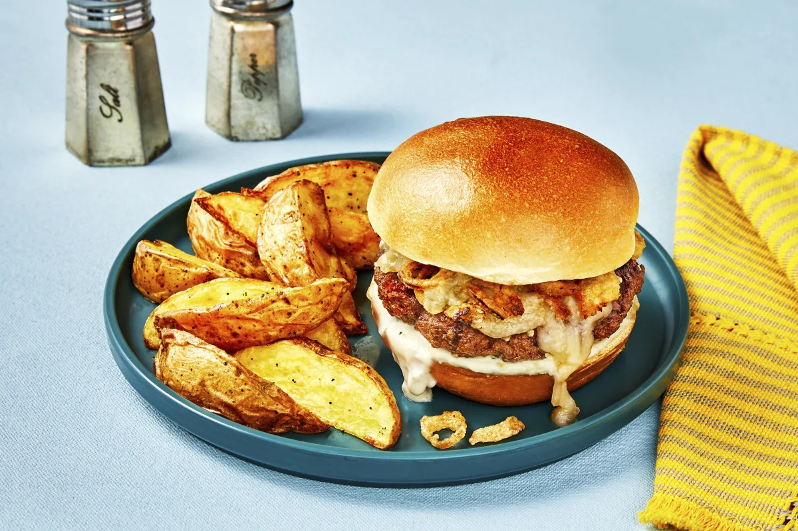

Firehouse Cheeseburger

Description
Ground beef patties are amped-up with Buffalo-style seasoning and hot sauce for double the zesty, spicy flavor.
Materials
- Baking sheet
- Small bowl
- Large bowl
- Large pan
- Kosher salt
- Black pepper
- Cooking oil (~2 tsp per serving)
Ingredients
**Individual portion sizing
- 5 oz Ground Beef
- 1 Potato Bun
- 1/3 cup Monterey Jack Cheese
- 4 oz Crispy Fried Onions
- 1 tbsp Frank's Hot Sauce
- 1/8 oz Frank's Seasoning Blend
- .75 oz Buttermilk Ranch Dressing
- 1 tbsp Sour Cream
- 1 tsp Garlic Powder
- 6 oz small Yukon Gold Potatoes
Steps
- ROAST POTATOES
- Adjust Rack to middle position and preheat oven to 450 degrees. Wash and dry produce.
- Cut potatoes into 1/2-inch-thick wedges. Toss on a baking sheet with a large drizzle of oil, half the garlic powder (you'll use the rest later), and a big pinch of salt and pepper.
- Roast on middle rack until browned and tender. 20-25 minutes.
- MAKE SAUCE
- While potatoes roast, in a small bowl, combine sour cream, and remaining garlic powder; season with salt and pepper. (TIP: if you like things spicy, add a dash of the hot sauce--just be sure to save some for forming your patties!)
- FORM & COOK PATTIES
- In a large bowl, combine beef, Frank's Seasoning, and salt. Form into two patties (four patties for 4 servings), each slightly wider than a burger bun.
- Heat a large drizzle of oil in a large pan over medium heat. Add patties and cook until browned and cooked to desired doneness. 3-5 minutes per side.
- In the last 1-2 minutes of cooking, top each patty with Monterey Jack cheese; cover pan to melt cheese.
- FINISH & SERVE
- While Patties cook, halve and toast buns. Spread cut side with creamy ranch sauce, then fill with patties and crispy fired onions.
- Divide burgers between plates and serve with potato wedges on the side.
Enjoy!
Home